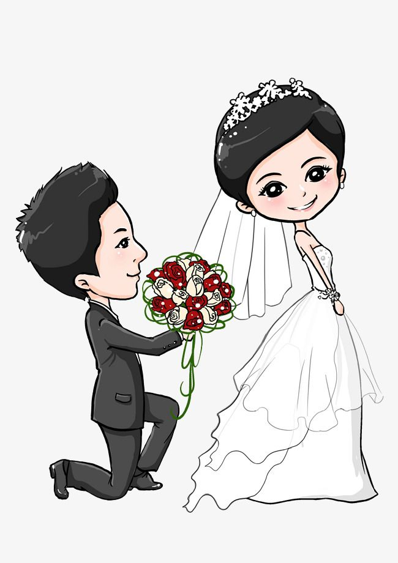

Jessica y Gerardo
Estamos encantados de invitarte a la celebración de nuestro matrimonio.
Ceremonia Religiosa
Sábado 17 de mayo de 2025 a las 4:00 PM
📠Recepción:
San Marcos Gro, Calle Morelos, Colonia El Cántaro
👨‍👩‍👧 Nuestros Padres
Baltazar Cesar Aleman Isidor & Guadalupe Villanueva Bibiano
Catalino Villanueva Memije & Marisol Heredia Navarrete
💠Padrinos
- Velación: Dr. Macario Navarrete Chávez y Dra. Enit Tinoco Cerros
- Arras: C.P. Ricardo Tereza y Guadalupe GarcÃa RamÃrez
- Anillos: Lic. Kristián Villazana Cortez y Lic. Judith Nicandra Cuevas Alcaraz
- Lazo: Dr. Ransel MartÃnez y Steicy Herrera Villanueva
- Libro y Rosario: Sr. Sergio Galindo y Graciela Jijón
🎁 Sugerencia de Regalo
Lo más importante para nosotros es que puedas acompañarnos ese dÃa tan especial. Pero si deseas hacernos un obsequio, te sugerimos:
Lluvia de Sobres
Gracias por permitirnos elegir nuestro regalo.